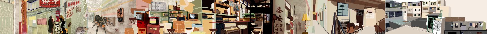

Introduce
九龙城寨由于特殊的历史背景，一直以来都属于三不管的地方，无论周边环境变得多急，它都仿佛是平行时空，守住自己的特殊地位。由抵抗外敌到窝藏罪犯再到绿化周边的社区，百年来随着自己的节奏不断转换角色。它是无数电影的取景地，也是Cyberpunk的灵感来源，究竟他是怎样一步步成为社会边缘人的避风港。外人看城寨乌烟瘴气，为法例所不容，黄赌毒的东西里面都有，三教九流的庇护所。四个足球场大小的地方最多时有五万人同时在无政府状态下生活大半个世纪。 因为历史的巧合，无论外面发展成什么样，九龙寨城都好像平行时空一样，它就是它，一个小小的范围支撑起一个自给自足的经济圈，为在外面生存不了或者犯了罪的人提供一个容身之所。 1993年城寨被拆除，原址建设为”九龙寨城公园“。
Geographical Location
位于香港九龙半岛东部、今启德机场以北，靠近大海，地理位置适合防卫外敌和打击进口货物走私。
History Development
保卫大清海防线
因为地理位置，最开始清政府在这里驻兵，作为防守海洋的地方 19世纪初，很多海盗围着这个地方活动，海盗“张保仔”攻占附近 1810年，“张保仔”投降，政府增设炮台，加强防守和驻兵
鸦片战争
1839年英军带着五艘英舰驶到当时还未填海的九龙湾，向九龙寨和九龙炮台偷袭，鸦片战争爆发。当时充分发挥了这里的战略位置，10小时内清兵将英舰打到落花流水 1842年英军卷土重来，1842年签署《南京条约》，将整个港岛割让给英国，九龙寨因为在九龙所以未受影响。
九龙寨建城
九龙寨因为制止走私进口货物进内地、打击海盗、要打探对面港岛英军的情况，清政府在九龙寨建造城墙、6座瞭望台、4道城门，增加炮台、重兵驻守、成立衙门，吸引居民入住、有情况可以军民合作。 1860年《北京条约》，将九龙半岛界限街以南割让给英国。1898年，签署《展拓香港界址专条》余下的九龙和新界都割让给英国，全香港正式成为英国殖民地，除了九龙寨城这座孤城（条约写明）。 后英军踩入九龙寨城赶走清政府官员，后英方撤出，埋下九龙城往后特殊地位的种子。英国人走了，清政府没有足够的国力管理这里，自此，寨城陷入无政府状态，成为“三不管地带”香港政府不敢管、英国政府不想管、中国政府管不了。
20世纪初
日本攻占香港，因为与美国的太平洋战争，需要空军，要支持空军，需要大量的起飞降落跑道，日本盯上香港九龙的启德机场，扩建启德机场，将隔壁九龙寨城的全部城墙拆毁用作建筑材料。 此时城寨里住的大多数穷人、内地来港谋生的人，因为土地易得，建筑又不受限制，到了1930年，九龙寨城已经有接近2000人。
二战后
国共内战，由于一大批难民涌入香港。慢慢，在时代巨轮下委曲求全的九龙寨城重新找到方向和使命，为社会容不下的人提供有个生存空间，它再一次转型。要在四个足球场大的地方容纳上万人，唯一出路就是向上发展。 九龙城寨随着战后人口不断增多，开始不断加高，一层一层叠上去。由于九龙寨城的无政府状态，这些建筑是在毫无监管下发生，全盛时期，这个格子有500栋建筑物，住了五万人，是全世界人口密度最高的地方。想过隔壁楼，不一定要从楼下走，也可以从天台直接跨过去。由于隔壁就是启德机场，未免飞机起飞降落失败，最高只能建14层，而飞机全部要侧身45度以防撞塌城寨。
城寨拆除
随着1984年《中英联合声明》发布，1987年香港政府宣布将分三期去拆卸九龙寨城，拆除是发现寨城的楼都是没地基的。1993年正式拆卸完毕。变成一个漂亮的公园即现在的“九龙寨城公园”，一百年前清政府建造的衙门和大炮还在见证着这段历史。
Photos


Words from Residents
“我細個由六歲至11歲都係住喺城寨，以前係住13樓冇電梯每日返學放學都要行樓梯，好驚係啲樓梯轉彎位見到會有死屍，包租公好衰成日都門天台個水掣等我哋冇水用，飲用嘅水係落樓下街口到攞嚟煲，天台水箱嘅水只係會攞嚟沖涼同刷牙，樓下永遠都係好臭一浸坑渠水嘅味道，水喉同電線縱橫交錯，啲老鼠大隻到會追番啲貓嚟咬，以前衙門係有副棺材擺喺中間，細個嘅活動就係一座天台爬去另外一座天台度玩，每日都係聽住飛機飛過嘅聲，有時望上天直頭感覺好似近到可以摸到佢咁。”
“我由出世到小一下學期都住城寨。我仲記得以前個地址，係阿爸阿媽教我要記。以前出入周圍都黑漆漆，頭頂滴水，地下垃圾、老鼠、針筒，路過咩舖頭都有，士多、食店、藥房。嗰時住9樓，阿媽日日拖住我地3兄妹出入上落，成日停水停電，生活艱難。阿媽話我地住嗰邊多數係正當人家，另一邊就比較雜同亂。仲記得嗰時試過由城寨出去，周圍黑到睇唔到路，“爬”過一個位，出到去係東頭村。不過又慶幸自己係城寨嘅見證人。”
""我細個就係住九龍城寨，而家個個叫九龍寨城唔知點解，清拆果年我11歲，果陣返屋企有3條捷徑可以行，我仲記得自己住果條街叫大井街 屋企啲自來水係唔可以食用，果陣日日都要落樓下個井度擔水返屋企 有時夜晚阿爸會帶我落去大笪地度食飯，好熱鬧好多人，有人即場劏蛇食蛇膽 至於黃賭毒，我記憶裡面係無見過呢啲嘢，可能我仲細所 以唔識分係咩嚟 小學讀薄仁，一直都係自己一個返學放學，一啲都唔覺得雜""
”我係九龍城寨住到初小然後被政府他區安置 記憶仲係到 入面雖然亂汚糟 但亂中有序 有一條大路由「山上」一邊入口去「山下」另一邊入口 每次我都係細細個一個人行呢條路 宜家諗返起 個陣無事叫好彩 呢條路無企街 無隱君子 同平時啲舊社區無異 會有啲小商舖 環境就黑黑漆漆 有僅餘嘅光管照明上望望唔到天空 有啲水管滴水有一浸味臭奥地 每次我行都好快 因為好驚 行一陣就會行完 應該十分鐘左右 個陣時一蚊可以去啲文具舖 買零食抽玩具 我成日叫我老豆俾一蚊我 「爸爸，一蚊嚟」 買完抽完又問佢攞 個陣我地住好似8樓 行樓梯一字排開 兩邊單位 然後盡頭兩邊就係樓梯 我住接近最外圍 一落到地下 行幾步路就係街 對面就係我返嘅幼稚園 而小學就係「山下」一係行外圍大路要行多少少路一係就行我上邊講個條中間核心大路 會快啲 但驚 仲記得個陣興搖搖 我地下個到有間士多都賣曬廣告“
""幼稚園同小學，都係住呢度。菁菁幼稚園、樂善堂小學。 屋企門口係條臭坑渠，要放塊厚木板，踩過木板先可以入到屋。 次次落大雨，條坑渠啲水就湧入屋，臭到死。 門口好多老鼠。 試過有一次喺門口屙尿，有隻大老鼠經過，嚇到我比拉鍊夾親啫啫。 隔籬屋有個光頭阿叔，着住件白色背心，拎住支鐵又，一野叉爆隻老鼠，嚇到我PK•••後尾仲係光頭阿叔，幫我解返個拉鍊，攞返條啫啫出嚟。""
My Painting
